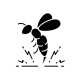

Insect Bites
1.Syrup Hydroxyzine N=1 q12h
2.Oint Betamethasone 0.1% N=1 q12h
Or Oint triamcinolone 0.% N=1 q12h
نکته: برخی از عوارض کورتیکوستروئیدهای موضعی: آتروفی، تلانژکتازی، نازک شدن درم و اپیدرم، استریا که آتروفی و تلانژکتازی با گذر زمان ازبین میروند ولی استریا باقی میماند.
اگر بعد از گزش دچار واکنش آنافیلاکسی شده بود:
Amp Epinephrine 1: 1000 (0.01cc/kg ) 0.3-0.5 cc
SQ or IM repeat every 5min
نکته: سایر اقدامات لازم درکتاب( شوک آنافیلاکسی) میتونید مطالع فرمایید
تشخیص افتراقی ها به تفکیک نوع گزش ( مار ، عقرب ، عنکبوت و زنبور ) در بخش حوادث و مسمومیت ها آورده شده است.
1️⃣ گزش با انواع موجودات : مورچه عنکبوت ، مار ، عقرب و ...
2️⃣ آنافیلاکسی
3️⃣ درماتیت : آتوپیک ، تماسی و...
Cat Scratch Disease 4️⃣
5️⃣ گال
6️⃣ سلولیت
7️⃣ آبسه
8️⃣ تروما
9️⃣ فولیکولیت
🔟 فاشئیت نکروزان
1️⃣1️⃣ بدخیمی
1️⃣2️⃣ آسیب های تماسی
✅سایر تشخیص افتراقی ها بر اساس علائم سیستمیک می باشدمثلا در صورت علائم تنفسی ،آسپیراسیون جسم خارجی ، آسم, COPD و ... مطرح است.
تصویری برای این نسخه موجود نیست.